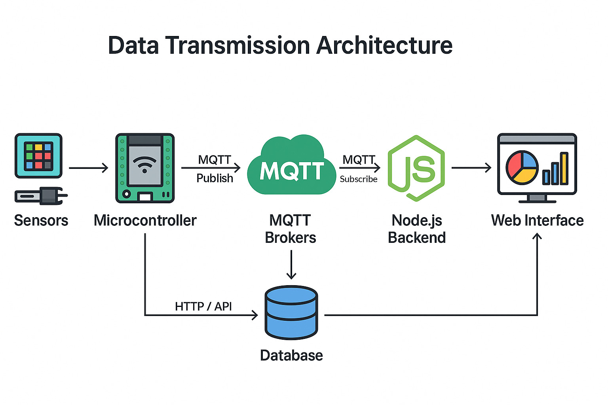
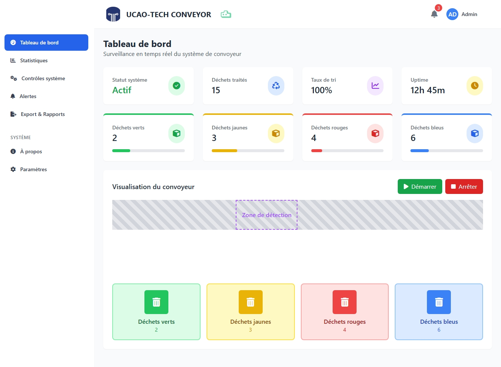

Documentation IT
Système de Convoyeur
Intelligent
Introduction
Contexte
Dans un monde où la gestion durable des déchets devient un enjeu majeur pour les villes industrielles, TEKBOT CITY souhaite se doter d’un système innovant pour optimiser le tri et la valorisation des déchets. L’automatisation du tri, la traçabilité des flux et l’intégration d’outils numériques sont désormais essentiels pour répondre aux exigences environnementales, économiques et réglementaires. Ce projet s’inscrit dans cette dynamique, en associant électronique, informatique et mécanique pour concevoir un convoyeur intelligent, évolutif et reproductible.
Vision et perspectives
L’ambition de ce projet est de démontrer comment l’innovation technologique peut transformer la gestion des déchets industriels. À court terme, il s’agit de mettre en place un système fiable, automatisé et connecté, capable de trier différents types de déchets en temps réel. À plus long terme, la solution vise à s’intégrer dans des réseaux urbains intelligents, à exploiter l’intelligence artificielle pour anticiper les besoins et à servir de base à d’autres applications industrielles ou environnementales. Ce projet ouvre la voie à une gestion plus responsable, collaborative et évolutive des ressources.
Approche documentaire
Cette documentation a été conçue pour garantir la transparence, la reproductibilité et l’amélioration continue du projet. Elle détaille chaque étape de la conception, des choix techniques aux méthodes de développement, en passant par les retours d’expérience. Illustrée de schémas, de codes et de recommandations pratiques, elle s’adresse à tous les acteurs du projet : développeurs, administrateurs, équipes mécaniques et électroniques. L’objectif est de faciliter la compréhension, le transfert de compétences et l’innovation collective autour du convoyeur intelligent.
Description du système
Présentation générale
Le système de convoyeur intelligent présenté ici est une solution innovante de tri automatisé des déchets, conçue pour répondre aux enjeux de l’industrie 4.0 et du développement durable. Il s’appuie sur une architecture modulaire intégrant des capteurs de présence et de couleur, un microcontrôleur embarqué, ainsi qu’une interface web de supervision. Cette plateforme permet d’identifier, de trier et de tracer chaque objet de manière fiable, tout en offrant une grande flexibilité d’évolution. Le projet met l’accent sur la reproductibilité, l’ouverture technologique et l’intégration facilitée dans des environnements industriels variés.
sequenceDiagram
participant Operateur as "Opérateur"
participant Objet as "Déchet (cube coloré)"
participant CapteurPresence as "Capteur de présence"
participant Convoyeur as "Convoyeur"
participant CapteurCouleur as "Capteur de couleur"
participant Microcontroleur as "Microcontrôleur"
participant InterfaceWeb as "Interface web"
participant Collecteur as "Collecteur (opérateur)"
Operateur->>Objet: Dépose le déchet sur le convoyeur
Objet->>CapteurPresence: Passage détecté
CapteurPresence-->>Microcontroleur: Signal de présence
Microcontroleur->>Convoyeur: Démarrage de la bande
Convoyeur->>Objet: Transport vers la zone d’analyse
Objet->>CapteurCouleur: Arrivée sous le capteur
CapteurCouleur-->>Microcontroleur: Mesure de la couleur (vert, jaune, rouge, bleu)
Microcontroleur->>InterfaceWeb: Mise à jour du compteur par couleur
Convoyeur->>Objet: Arrêt en fin de parcours
Collecteur->>Objet: Récupère le déchet
Collecteur->>Corbeille: Dépose dans la benne correspondant à la couleur
Enjeux et perspectives
Ce projet répond à plusieurs enjeux stratégiques : automatiser le tri pour améliorer la valorisation des déchets, fiabiliser la collecte de données pour piloter l’optimisation des flux, et préparer l’intégration de technologies avancées (intelligence artificielle, maintenance prédictive, interconnexion IoT). Les perspectives incluent l’extension à d’autres types de tri, l’adaptation à de nouveaux contextes industriels, et la contribution à la transition écologique par l’innovation technologique. Le système vise à devenir une brique de référence pour la modernisation des chaînes de tri et la gestion intelligente des ressources.
Objectifs du système
- Détecter automatiquement la présence et la couleur des objets sur le convoyeur.
- Classer et trier les déchets de façon autonome selon des critères configurables.
- Assurer la traçabilité complète des opérations et l’archivage des données de tri.
- Fournir une interface web de supervision et de paramétrage accessible à distance.
Fonctionnement général
- Un objet est déposé sur le convoyeur par l’opérateur.
- Le capteur de présence détecte automatiquement l’arrivée de l’objet et déclenche la mise en marche du convoyeur.
- L’objet est transporté jusqu’à la zone de détection, où le capteur de couleur identifie précisément sa teinte.
- Selon la couleur détectée, le système oriente l’objet vers le bac de tri approprié grâce à une logique embarquée.
- Toutes les opérations (détection, tri, comptage) sont enregistrées et affichées en temps réel sur l’interface web, permettant un suivi précis et une analyse des performances.
Avantages du système
- Tri automatisé, rapide et fiable, réduisant considérablement les erreurs humaines.
- Adaptabilité à différents types de déchets et scénarios industriels grâce à une architecture modulaire.
- Diminution des interventions manuelles, ce qui optimise le temps de travail des opérateurs.
- Collecte et analyse de données pour améliorer en continu les performances du tri.
- Contribution active à la transition écologique par la valorisation et le recyclage intelligent des déchets.
Détection intelligente
La détection intelligente s’appuie sur deux piliers essentiels : l’identification instantanée de la présence d’un objet sur le convoyeur et la reconnaissance fiable de sa couleur. Cette double détection permet d’automatiser le suivi de chaque déchet, d’optimiser le tri en temps réel et de garantir la traçabilité des opérations. Les technologies et méthodes employées pour atteindre ce niveau de précision sont détaillées dans la suite de cette section.
Détection de couleurs
sequenceDiagram
participant Arduino
participant Registres as Registres TCS34725
participant ADC as Convertisseur ADC
participant Photodiodes
participant I2C as Interface I2C
participant LED
Arduino->>Registres: Configuration initiale
Note over Arduino,Registres: SET PON=1 (Power ON)
Registres-->>Arduino: ACK
Arduino->>Registres: SET AEN=1 (ADC Enable)
Registres-->>Arduino: ACK
Arduino->>LED: Activation (si nécessaire)
LED->>Photodiodes: Éclairage objet
loop Cycle de mesure
Arduino->>Registres: SET ATIME et GAIN
Registres-->>Arduino: ACK
activate Photodiodes
Photodiodes->>Photodiodes: Intégration lumière (154ms)
deactivate Photodiodes
Photodiodes->>ADC: Courants analogiques (R,G,B,C)
activate ADC
ADC->>ADC: Conversion ΣΔ 16 bits (1.8ms)
ADC->>Registres: Valeurs numériques
deactivate ADC
Registres->>Registres: Correction IR
Note over Registres: R_corr = R - 0.8*(R+G+B-C)
Arduino->>I2C: Demande lecture (START, 0x29 W)
I2C->>Registres: Pointeur 0x14
Arduino->>I2C: RESTART, 0x29 R
I2C->>Arduino: Envoi octets (LSB/MSB Clear)
I2C->>Arduino: Envoi octets (LSB/MSB Rouge)
I2C->>Arduino: Envoi octets (LSB/MSB Vert)
I2C->>Arduino: Envoi octets (LSB/MSB Bleu)
Arduino->>I2C: STOP
activate Arduino
Arduino->>Arduino: Normalisation RGB
Note over Arduino: r_norm = (r_raw/c_raw)*255
Arduino->>Arduino: Identification couleur
deactivate Arduino
Arduino->>Registres: SET AEN=0 (Arrêt ADC)
Registres-->>Arduino: ACK
Arduino->>Registres: SET PON=0 (Power OFF)
Registres-->>Arduino: ACK
end
Arduino->>LED: Désactivation (si nécessaire)
Étape 3 : Lecture des valeurs brutes
Une fois le capteur initialisé, on peut lire les valeurs brutes des
composantes Rouge, Vert, Bleu et Clair (lumière totale). Ces mesures
servent de base pour la calibration et l’identification des
couleurs.
On utilise la fonction getRawData() de la bibliothèque pour
récupérer ces valeurs.
// Variables pour stocker les mesures
uint16_t r, g, b, c;
void loop() {
// Lecture des valeurs brutes du capteur
tcs.getRawData(&r, &g, &b, &c);
// Affichage des valeurs sur le moniteur série
Serial.print("Rouge : "); Serial.print(r);
Serial.print("\tVert : "); Serial.print(g);
Serial.print("\tBleu : "); Serial.print(b);
Serial.print("\tClair : "); Serial.println(c);
delay(500); // Attente entre deux mesures
}
flowchart TD
A[Alimentation 3.3V-5V] --> B[Régulateur 2.4V]
B --> C[Circuit Logique]
C --> D[Config Registres I2C]
D --> E[ENABLE: PON=1]
E --> F[Attente 2.4ms]
F --> G[ENABLE: AEN=1]
G --> H{LED activée?}
H -->|Oui| I[Allumage LED]
H -->|Non| J[Utilise lumière ambiante]
I --> K[Éclairage objet]
J --> K
K --> L[Lumière réfléchie]
L --> M[Filtrage optique]
M --> N[Photodiodes]
N --> O[Conversion lumière → courant]
O --> P[Amplificateur transimpédance]
P --> Q{Réglage gain}
Q -->|1x| R1[Rfb=24kΩ]
Q -->|4x| R2[Rfb=96kΩ]
Q -->|16x| R3[Rfb=384kΩ]
Q -->|60x| R4[Rfb=1.44MΩ]
R1 --> S[Filtre RC 1kHz]
R2 --> S
R3 --> S
R4 --> S
S --> T[Multiplexeur 4:1]
T --> U[ADC Σ-Δ 16 bits]
U --> V[Intégration charge]
V --> W[Comparaison référence]
W --> X[Comptage 16 bits]
X --> Y[Stockage registres]
Y --> Z[Correction IR]
Z --> AA[Interface I2C]
AA --> AB[START + Adr 0x29 W]
AB --> AC[Pointeur 0x14]
AC --> AD[RESTART + Adr 0x29 R]
AD --> AE[Lecture octets]
AE --> AF[STOP]
AF --> AG[Arduino]
AG --> AH[Lecture valeurs brutes]
AH --> AI[Normalisation RGB]
AI --> AJ[Identification couleur]
subgraph Capteur TCS34725
A --> Y
end
subgraph Traitement Arduino
AG --> AJ
end
Avantages et inconvénients du capteur TCS34725
- Très bonne précision de détection des couleurs grâce à l’ADC 16 bits et la correction IR intégrée.
- Facilité d’intégration (I2C, LED embarquée).
- Réglages adaptables (gain, temps d’intégration) pour s’ajuster à différents contextes.
- Sensible à la lumière ambiante et aux objets atypiques (transparents, brillants, très sombres).
- Calibration indispensable pour garantir la fiabilité des mesures.
- Temps de mesure non instantané (intégration typique > 100 ms).
Bonnes pratiques pour une détection de couleur fiable
- Activer la LED intégrée à chaque mesure pour un éclairage constant.
- Effectuer une calibration régulière avec des échantillons de référence adaptés à l’environnement réel.
- Optimiser le gain et le temps d’intégration selon la luminosité et la couleur des objets à détecter.
- Protéger le capteur des sources lumineuses parasites et des poussières.
- Répéter la calibration si l’environnement lumineux ou les objets changent.
Étape 1 : Bibliothèques utilisées
Pour piloter le capteur de couleur TCS34725 avec Arduino, on utilise la bibliothèque
Adafruit_TCS34725. Elle facilite la communication I2C, la configuration du capteur et
la lecture des mesures couleur.
Il faut également inclure la bibliothèque Wire pour la gestion du bus I2C.
// Inclusion des bibliothèques nécessaires
#include <Wire.h>
#include <Adafruit_TCS34725.h>
Étape 2 : Initialisation du capteur
Avant toute mesure, il faut créer un objet capteur et vérifier que la communication I2C
fonctionne correctement. On initialise le capteur avec les paramètres de gain et de temps
d’intégration adaptés à l’application.
L’initialisation permet aussi de détecter si le capteur est bien connecté.
// Création de l’objet capteur avec gain et temps d’intégration
Adafruit_TCS34725 tcs = Adafruit_TCS34725(
TCS34725_INTEGRATIONTIME_154MS, // Temps d’intégration (précision)
TCS34725_GAIN_4X // Gain (sensibilité)
);
void setup() {
Serial.begin(9600); // Initialisation de la communication série
if (tcs.begin()) {
Serial.println("Capteur TCS34725 détecté !");
} else {
Serial.println("Erreur : capteur TCS34725 non détecté.");
while (1); // Arrêt du programme si capteur absent
}
}
Étape 3 : Lecture des valeurs brutes
Une fois le capteur initialisé, on peut lire les valeurs brutes des composantes Rouge, Vert,
Bleu et Clair (lumière totale). Ces mesures servent de base pour la calibration et
l’identification des couleurs.
On utilise la fonction getRawData() de la bibliothèque pour récupérer ces valeurs.
// Variables pour stocker les mesures
uint16_t r, g, b, c;
void loop() {
// Lecture des valeurs brutes du capteur
tcs.getRawData(&r, &g, &b, &c);
// Affichage des valeurs sur le moniteur série
Serial.print("Rouge : "); Serial.print(r);
Serial.print("\tVert : "); Serial.print(g);
Serial.print("\tBleu : "); Serial.print(b);
Serial.print("\tClair : "); Serial.println(c);
delay(500); // Attente entre deux mesures
}
Étape 4 : Normalisation des valeurs RGB
Les valeurs brutes dépendent de la luminosité ambiante et de la distance de l’objet. Pour
comparer les couleurs de façon fiable, on normalise chaque composante (rouge, vert, bleu)
par rapport à la composante « clair » (c).
La formule est : valeur_normalisée = (valeur_brute / clair) × 255. On obtient
ainsi des valeurs sur 0–255, indépendantes de l’intensité lumineuse.
Attention : il faut vérifier que la composante «
clair » n’est pas nulle pour éviter une division par zéro.
// Variables pour stocker les valeurs normalisées
uint8_t r_norm, g_norm, b_norm;
void loop() {
tcs.getRawData(&r, &g, &b, &c);
if (c > 0) {
r_norm = (uint32_t)r * 255 / c;
g_norm = (uint32_t)g * 255 / c;
b_norm = (uint32_t)b * 255 / c;
} else {
r_norm = g_norm = b_norm = 0;
}
Serial.print("R norm : "); Serial.print(r_norm);
Serial.print("\tG norm : "); Serial.print(g_norm);
Serial.print("\tB norm : "); Serial.println(b_norm);
delay(500);
}
Étape 5 : Correction gamma des valeurs RGB
Même après normalisation, la perception humaine des couleurs n'est pas linéaire : l'œil
est plus sensible aux faibles intensités. Pour obtenir des couleurs plus fidèles à la vision
humaine, on applique une correction gamma (généralement avec un gamma de 2,5).
Cette opération consiste à transformer chaque composante normalisée selon la formule :
valeur_corrigée = pow(valeur_normalisée / 255.0, 1 / gamma) × 255.
On utilise la fonction pow() d'Arduino pour effectuer cette correction sur chaque
composante.
// Variables pour stocker les valeurs corrigées gamma
uint8_t r_gamma, g_gamma, b_gamma;
const float gamma = 2.5;
void loop() {
// Supposons que r_norm, g_norm, b_norm ont déjà été calculés à l'étape 4
r_gamma = pow(r_norm / 255.0, 1.0 / gamma) * 255.0;
g_gamma = pow(g_norm / 255.0, 1.0 / gamma) * 255.0;
b_gamma = pow(b_norm / 255.0, 1.0 / gamma) * 255.0;
Serial.print("R gamma : "); Serial.print(r_gamma);
Serial.print("\tG gamma : "); Serial.print(g_gamma);
Serial.print("\tB gamma : "); Serial.println(b_gamma);
delay(500);
}
Étape 6 : Identification de la couleur
Après correction gamma, il est possible d’identifier la couleur dominante de l’objet
détecté. On compare les valeurs corrigées (r_gamma, g_gamma, b_gamma) pour déterminer la
couleur la plus représentée. Une méthode simple consiste à utiliser des seuils ou à comparer
la composante la plus élevée.
Exemple : si r_gamma est nettement supérieur aux autres, l’objet est rouge. On peut
affiner la détection avec des plages de tolérance pour chaque couleur (rouge, vert, bleu,
jaune, etc.).
// Fonction pour identifier la couleur dominante
// Fonction pour identifier la couleur dominante (seulement Rouge, Vert, Bleu, Jaune)
String detectColor(uint8_t r, uint8_t g, uint8_t b) {
if (r > 180 && g < 120 && b < 120) return "Rouge";
if (g > 180 && r < 120 && b < 120) return "Vert";
if (b > 180 && r < 120 && g < 120) return "Bleu";
if (r > 180 && g > 180 && b < 120) return "Jaune";
return "Inconnu";
}
// Supposons que r_gamma, g_gamma, b_gamma sont déjà calculés aux étapes précédentes
void loop() {
String couleur = detectColor(r_gamma, g_gamma, b_gamma);
Serial.print("Couleur détectée : ");
Serial.println(couleur);
delay(500);
}
Étape 7 : Calibration du capteur de couleur
La calibration est essentielle pour garantir la fiabilité de la détection des couleurs dans
différents environnements lumineux. Elle consiste à mesurer les valeurs du capteur avec des
objets de référence (rouge, vert, bleu, jaune, blanc, noir) dans les conditions réelles
d’utilisation, puis à ajuster les seuils utilisés pour l’identification.
- Placez un objet de couleur connue sous le capteur et notez les valeurs normalisées et corrigées gamma obtenues.
- Répétez l’opération pour chaque couleur à détecter.
- Adaptez les seuils dans la fonction
detectColor()en fonction des résultats mesurés. - Réalisez la calibration à chaque changement d’environnement lumineux ou de type d’objet.
Fonction dédiée : détection de couleur (Arduino + TCS34725)
#include <Wire.h>
#include <Adafruit_TCS34725.h>
Adafruit_TCS34725 tcs = Adafruit_TCS34725();
// Fonction qui gère toute la détection et retourne le nom de la couleur
String detectColorTCS34725() {
uint16_t r, g, b, c;
uint8_t r_norm, g_norm, b_norm;
uint8_t r_gamma, g_gamma, b_gamma;
const float gamma = 2.5;
tcs.getRawData(&r, &g, &b, &c);
// Normalisation
if (c > 0) {
r_norm = (uint32_t)r * 255 / c;
g_norm = (uint32_t)g * 255 / c;
b_norm = (uint32_t)b * 255 / c;
} else {
r_norm = g_norm = b_norm = 0;
}
// Correction gamma
r_gamma = pow(r_norm / 255.0, 1.0 / gamma) * 255.0;
g_gamma = pow(g_norm / 255.0, 1.0 / gamma) * 255.0;
b_gamma = pow(b_norm / 255.0, 1.0 / gamma) * 255.0;
// Identification de la couleur
if (r_gamma > 180 && g_gamma < 120 && b_gamma < 120) return "Rouge";
if (g_gamma > 180 && r_gamma < 120 && b_gamma < 120) return "Vert";
if (b_gamma > 180 && r_gamma < 120 && g_gamma < 120) return "Bleu";
if (r_gamma > 180 && g_gamma > 180 && b_gamma < 120) return "Jaune";
return "Inconnu";
}
void setup() {
Serial.begin(9600);
if (tcs.begin()) {
Serial.println("Capteur TCS34725 détecté !");
} else {
Serial.println("Erreur capteur TCS34725");
while (1);
}
}
void loop() {
String couleur = detectColorTCS34725();
Serial.print("Couleur détectée : ");
Serial.println(couleur);
delay(500);
}

Détection de présence
Qu’est-ce qu’un capteur de présence ? Un capteur de présence est un composant électronique qui permet de savoir si un objet ou une personne se trouve dans une zone précise. Il fonctionne en détectant une modification de l’environnement, comme une coupure de lumière, un changement de champ magnétique ou une variation sonore. Dès qu’un objet entre dans la zone surveillée, le capteur réagit et envoie un signal au système pour déclencher une action (par exemple, démarrer un moteur ou compter un passage).Dans notre convoyeur, nous utilisons un duo laser KY-008 et photorésistance : quand un objet coupe le faisceau lumineux, la présence est détectée instantanément, ce qui permet un tri rapide et fiable des déchets.
sequenceDiagram
box Système Laser
participant KY-008 as Laser KY-008
participant LDR as Photorésistance
end
box Contrôleur
participant µC as Microcontrôleur
participant Actionneur
end
Note over KY-008,LDR: Phase stable - Laser actif
loop Toutes les 20ms
KY-008->>LDR: Faisceau laser (λ=650nm)
LDR->>µC: Signal analogique (V₀ = 4.8V)
µC->>µC: Filtrage (moyenne mobile)
µC->>µC: Comparaison SEUIL_HAUT=4.3V
end
Objet->>LDR: Interruption du faisceau
LDR->>µC: Chute brutale (V₁ = 0.5V)
µC->>µC: Validation temporelle (3x20ms)
µC->>Actionneur: GPIO HIGH + PWM Buzzer(1kHz)
Actionneur->>Environnement: Alarme sonore/lumineuse
Note over µC: Gestion des erreurs
alt Détection > 2s
µC->>KY-008: Arrêt d'urgence (GPIO LOW)
end
flowchart TB
A[Alimentation 5V] --> B[Initialisation KY-008]
B --> C[Activation diode laser]
C --> D[Émission faisceau laser 650nm]
D --> E{Environnement}
E -->|Air| F[Transmission optique]
E -->|Poussières| G[Diffusion lumineuse]
F --> H[Photorésistance CdS]
G --> H
H --> I[Absorption photons]
I --> J[Génération paires e⁻-trou]
J --> K[Augmentation conductivité]
K --> L[Circuit pont diviseur]
L --> M[Conversion tension VA0]
M --> N[Acquisition Arduino]
N --> O[Filtrage analogique RC]
O --> P[Conversion ADC 10-bit]
P --> Q[Traitement numérique]
Q --> R[Filtrage IIR]
R --> S[Calcul baseline dynamique]
S --> T{Objet détecté ?}
T -->|Oui| U[Validation détection]
T -->|Non| Q
U --> V[Inc. compteur objets]
V --> W[Envoi données série]
W --> X[Compensation thermique]
X --> Y[Lecture température]
Y --> Z[Ajustement baseline]
Z --> Q
Q --> AA[Gestion inertie CdS]
AA --> AB[Calibration auto]
AB --> AC[Ajustement paramètres]
AC --> Q
Avantages et inconvénients du capteur de présence (KY-008 + photorésistance)
- Détection très rapide et fiable grâce à l’interruption directe du faisceau lumineux.
- Solution économique, simple à mettre en œuvre et à intégrer sur un convoyeur.
- Faible consommation d’énergie et compatibilité avec la plupart des microcontrôleurs.
- Sensibilité aux perturbations lumineuses ambiantes et à la poussière.
- Nécessite un alignement précis entre le laser et la photorésistance.
- Moins efficace pour détecter des objets transparents ou très petits.
Bonnes pratiques pour une détection de présence fiable
- Vérifier régulièrement l’alignement du laser et de la photorésistance pour éviter les erreurs de détection.
- Protéger le capteur et le faisceau contre la poussière, les projections et la lumière parasite.
- Adapter le seuil de détection selon l’environnement lumineux réel.
- Tester le système à intervalles réguliers et remplacer la photorésistance en cas de dérive ou de lenteur.
- Prévoir une alerte en cas de détection prolongée (objet bloqué, laser désaligné) pour garantir la sécurité et la fiabilité du tri.
- Définir la broche du laser (sortie) et celle de la LDR (entrée analogique).
- Initialiser ces broches dans
setup().
#define LASER_PIN 8 // Broche digitale pour le laser
#define LDR_PIN A0 // Broche analogique pour la LDR
void setup() {
pinMode(LASER_PIN, OUTPUT);
pinMode(LDR_PIN, INPUT);
}
Étape 2 : Activation du laser :
- Allumer le laser dans
setup()ou au début deloop()pour garantir un faisceau constant.
void setup() {
pinMode(LASER_PIN, OUTPUT);
digitalWrite(LASER_PIN, HIGH); // Activation du laser
Serial.begin(9600);
}
Étape 3 : Lecture de la valeur brute de la LDR :
- Lire la valeur analogique de la photorésistance avec
analogRead().
void loop() {
int ldrValue = analogRead(LDR_PIN);
Serial.print("Valeur LDR : ");
Serial.println(ldrValue);
delay(100);
}
Étape 4 : Détermination du seuil de détection :
- Définir un seuil expérimental (calibration) pour distinguer la présence ou l’absence du faisceau.
int seuil = 400; // À ajuster selon l’environnement
void loop() {
int ldrValue = analogRead(LDR_PIN);
if (ldrValue < seuil) {
Serial.println("Présence détectée !");
}
delay(100);
}
Étape 5 : Détection de la présence (coupure du
faisceau) :
- Comparer la valeur lue au seuil : si la valeur chute, un objet coupe le faisceau → présence détectée.
if (ldrValue < seuil) {
// Action à réaliser lors de la détection
Serial.println("Objet détecté !");
}
Étape 6 : Filtrage logiciel et action :
- Valider la détection sur plusieurs mesures pour éviter les faux positifs.
- Déclencher l’action souhaitée (compteur, moteur, alarme…)
int compteur = 0;
if (ldrValue < seuil) {
compteur++;
if (compteur > 3) { // Validation sur plusieurs mesures
Serial.println("Présence confirmée !");
compteur = 0; // Remise à zéro après détection
}
} else {
compteur = 0;
}
Étape 7 : Calibration et ajustement :
- Ajuster le seuil selon l’environnement lumineux réel.
- Tester avec différents objets pour fiabiliser la détection.
// Pour calibrer, afficher la valeur de la LDR sans objet et avec objet
// puis ajuster la variable seuil en conséquence.
// Exemple :
void loop() {
int ldrValue = analogRead(LDR_PIN);
Serial.println(ldrValue);
delay(200);
}
// Observer les valeurs affichées pour choisir un seuil fiable.
Fonction dédiée : détection de présence (Arduino + KY-008 + LDR)
#define LASER_PIN 8 // Broche digitale pour le laser
#define LDR_PIN A0 // Broche analogique pour la LDR
#define SEUIL 400 // Seuil à ajuster selon l’environnement
// Fonction qui regroupe toutes les étapes de la détection de présence
bool detectPresence(int ldrPin, int seuil, int nbValidations = 3) {
int compteur = 0;
for (int i = 0; i < nbValidations; i++) {
int ldrValue = analogRead(ldrPin); // Étape 3 : Lecture de la LDR
if (ldrValue < seuil) { // Étape 4 : Comparaison au seuil
compteur++;
}
delay(20); // Étape 6 : Filtrage logiciel (validation temporelle)
}
return (compteur == nbValidations); // Étape 5 : Validation de la présence
}
void setup() {
pinMode(LASER_PIN, OUTPUT); // Étape 1 : Initialisation laser
pinMode(LDR_PIN, INPUT); // Étape 1 : Initialisation LDR
digitalWrite(LASER_PIN, HIGH); // Étape 2 : Activation du laser
Serial.begin(9600);
}
void loop() {
if (detectPresence(LDR_PIN, SEUIL)) {
Serial.println("Présence confirmée !");
// Action à réaliser lors de la détection
}
delay(100);
}
Explication : Cette fonction detectPresence() reprend toutes les étapes
détaillées ci-dessus : lecture de la LDR, comparaison au seuil, filtrage logiciel (validation
sur plusieurs mesures), et retour d’un booléen indiquant la présence ou non d’un objet. Elle
permet d’intégrer facilement la détection de présence dans un algorithme Arduino.
![Schéma de câblage KY-008]()
Astuces : complémentarité entre capteurs de présence et capteur de couleur
Avantages :
- Économie d’énergie et réduction des fausses mesures.
- Synchronisation parfaite entre détection de présence et analyse de couleur.
- Possibilité d’utiliser la broche INT du TCS34725 pour activer/désactiver le capteur selon la présence détectée.
- Un capteur de présence placé au début du convoyeur détecte l’arrivée d’un objet et active le capteur de couleur (via la broche INT du TCS34725).
- Le capteur de couleur effectue la mesure uniquement lorsqu’un objet est détecté.
- Un second capteur de présence, placé à la fin du convoyeur, détecte le passage de l’objet et désactive le capteur de couleur, indiquant que l’analyse a été réalisée.
sequenceDiagram
participant CapteurDebut as Capteur présence (début)
participant Couleur as Capteur couleur (TCS34725)
participant Arduino as Arduino
participant CapteurFin as Capteur présence (fin)
participant Objet as Objet
Objet->>CapteurDebut: Arrivée sur le convoyeur
CapteurDebut->>Arduino: Présence détectée
Arduino->>Couleur: Activation (via INT)
Couleur->>Arduino: Mesure couleur
Arduino->>CapteurFin: Attente détection fin
Objet->>CapteurFin: Passage devant capteur fin
CapteurFin->>Arduino: Présence détectée
Arduino->>Couleur: Désactivation (via INT)
Arduino->>Actionneur: Tri selon couleur
Note over Arduino: Synchronisation et économie d'énergie
Automatisation du convoyeur
L’automatisation du convoyeur repose sur une intelligence embarquée qui pilote l’ensemble du processus de tri : détection, identification, orientation et suivi. Grâce à l’intégration de capteurs et d’actionneurs, le système fonctionne de façon autonome, optimise le flux des déchets et garantit la sécurité. Cette automatisation permet :
- Un tri instantané et sans interruption.
- Une adaptation à différents types de déchets et cadences.
- Une gestion proactive des incidents et de la sécurité.
- Un contrôle et une traçabilité accessibles à tout moment via l’interface web.
Le convoyeur automatisé incarne ainsi la modernisation du tri industriel, alliant performance, fiabilité et évolutivité.
Architecture de l’automatisation
L’architecture du système repose sur les composants suivants :
- Microcontrôleur : Arduino Nano, cœur du système, gère la logique de tri, les entrées/sorties et la communication avec l’interface web via un module WiFi (ex : ESP8266).
- Capteurs de présence : module laser KY-008 + photorésistance, placés au début et à la fin du convoyeur pour détecter l’arrivée et la sortie des cubes (activation/désactivation du tapis).
- Capteur de couleur : TCS34725, placé au-dessus du tapis pour identifier la couleur du cube à la volée.
- Actionneurs : moteur pas à pas pour entraîner le tapis du convoyeur, deux servomoteurs pour orienter les cubes vers le bac adapté selon la couleur détectée.
Cette architecture assure un tri automatique, rapide et fiable, avec activation du tapis uniquement à la détection d’un déchet, identification à la volée, orientation dynamique, et arrêt du tapis dès la sortie du cube.
sequenceDiagram
participant CapteurDebut as Capteur présence début
participant Microcontroleur as Microcontrôleur
participant Moteur as Moteur du tapis
participant CapteurCouleur as Capteur de couleur
participant Servomoteur as Servomoteur d’aiguillage
participant CapteurFin as Capteur présence fin
participant InterfaceWeb as Interface web
CapteurDebut->>Microcontroleur: Détection d’un cube (laser interrompu)
Microcontroleur->>Moteur: Démarrage du tapis
Moteur->>CapteurCouleur: Transport du cube
CapteurCouleur-->>Microcontroleur: Détection couleur à la volée
Microcontroleur->>Servomoteur: Anticipation de la consigne de tri
Moteur->>CapteurFin: Transport du cube jusqu’à la sortie
CapteurFin-->>Microcontroleur: Cube sorti (laser interrompu)
Microcontroleur->>Moteur: Arrêt du tapis
Microcontroleur->>InterfaceWeb: Mise à jour des compteurs
Gestion des cas particuliers et erreurs
Pour garantir la robustesse du système, l’automatisation intègre la gestion des cas particuliers :
- Absence d’objet : Si aucun objet n’est détecté par le capteur de présence, le convoyeur reste à l’arrêt et le système attend un nouvel événement. Cela évite tout fonctionnement inutile ou accidentel.
- Erreur de détection couleur : Si le capteur de couleur ne parvient pas à identifier la teinte (valeur « Inconnu »), l’objet est orienté vers un bac de tri spécial « erreur » et une alerte est affichée sur l’interface web. Cette mesure permet d’éviter le mélange des déchets et d’assurer la traçabilité des anomalies.
- Objets atypiques ou non conformes : Les objets trop petits, trop grands ou transparents peuvent ne pas être détectés correctement. Le système prévoit une validation temporelle et des seuils pour filtrer ces cas et éviter les erreurs de tri.
- Sécurité : En cas de détection prolongée ou d’obstruction du convoyeur (objet bloqué, capteur activé > 2s), un arrêt d’urgence est déclenché et une alarme sonore/lumineuse est activée pour prévenir l’opérateur.
- Absence de capteur ou défaut matériel : Si le microcontrôleur ne détecte pas la présence d’un capteur lors de l’initialisation, le système se met en sécurité et affiche une erreur sur l’interface web.
Code Arduino du système automatisé
#include <Wire.h>
#include <Adafruit_TCS34725.h>
#include <Servo.h>
// --- Définition des broches ---
// Capteurs de présence
#define LASER_ENTREE_PIN 2 // Capteur laser entrée
#define LDR_ENTREE_PIN A0 // Photorésistance entrée
#define LASER_SORTIE_PIN 3 // Capteur laser sortie
#define LDR_SORTIE_PIN A1 // Photorésistance sortie
// Moteur pas à pas (driver à 4 broches)
#define DRIVER_IN1_PIN 4
#define DRIVER_IN2_PIN 5
#define DRIVER_IN3_PIN 6
#define DRIVER_IN4_PIN 7
// Servomoteurs pour le tri
#define SERVO_TRI1_PIN 8
#define SERVO_TRI2_PIN 9
// LED indicatrices
#define LED_ROUGE_PIN 10
#define LED_VERTE_PIN 11
#define LED_BLEUE_PIN 12
#define LED_JAUNE_PIN 13
#define LED_BLANCHE_PIN A2 // LED état système
// Capteur de couleur
#define TCS_INT_PIN A3 // Broche INT pour activer/désactiver le capteur
// SDA = A4, SCL = A5 (fixes sur Arduino Nano)
// --- Objets capteurs et actionneurs ---
Adafruit_TCS34725 tcs = Adafruit_TCS34725();
Servo servoTri1;
Servo servoTri2;
// --- Initialisation ---
void setup() {
// Initialisation des broches capteurs
pinMode(LASER_ENTREE_PIN, INPUT);
pinMode(LDR_ENTREE_PIN, INPUT);
pinMode(LASER_SORTIE_PIN, INPUT);
pinMode(LDR_SORTIE_PIN, INPUT);
// Initialisation des broches moteur pas à pas
pinMode(DRIVER_IN1_PIN, OUTPUT);
pinMode(DRIVER_IN2_PIN, OUTPUT);
pinMode(DRIVER_IN3_PIN, OUTPUT);
pinMode(DRIVER_IN4_PIN, OUTPUT);
// Initialisation des servomoteurs
servoTri1.attach(SERVO_TRI1_PIN);
servoTri2.attach(SERVO_TRI2_PIN);
// Initialisation des LED
pinMode(LED_ROUGE_PIN, OUTPUT);
pinMode(LED_VERTE_PIN, OUTPUT);
pinMode(LED_BLEUE_PIN, OUTPUT);
pinMode(LED_JAUNE_PIN, OUTPUT);
pinMode(LED_BLANCHE_PIN, OUTPUT);
// Initialisation INT capteur couleur
pinMode(TCS_INT_PIN, OUTPUT);
digitalWrite(TCS_INT_PIN, LOW); // Capteur couleur désactivé au démarrage
// Initialisation du capteur de couleur
if (tcs.begin()) {
digitalWrite(LED_BLANCHE_PIN, HIGH); // Système prêt
} else {
digitalWrite(LED_BLANCHE_PIN, LOW); // Système non prêt
}
// Initialisation communication série (vers ESP8266)
Serial.begin(9600);
}
// --- Boucle principale ---
void loop() {
// Détection de présence au début
if (detectPresenceDebut()) {
activerConvoyeur();
digitalWrite(TCS_INT_PIN, HIGH); // Activation capteur couleur
// Détection couleur
String couleur = detectColor();
showColorLED(couleur);
trierObjet(couleur);
// Envoi des données à l'ESP8266
envoyerDonnees(couleur, "EN_MARCHE");
}
// Détection de présence à la fin
if (detectPresenceFin()) {
arreterConvoyeur();
digitalWrite(TCS_INT_PIN, LOW); // Désactivation capteur couleur
// Envoi état arrêt à l'ESP8266
envoyerDonnees("AUCUNE", "ARRET");
}
// Gestion des erreurs et sécurité
handleError();
}
// --- Fonctions principales (à implémenter) ---
bool detectPresenceDebut() {
// Détection présence début convoyeur
}
bool detectPresenceFin() {
// Détection présence fin convoyeur
}
void activerConvoyeur() {
// Activation moteur pas à pas via driver (4 broches)
}
void arreterConvoyeur() {
// Arrêt moteur pas à pas via driver (4 broches)
}
String detectColor() {
// Détection couleur avec TCS34725
}
void showColorLED(String couleur) {
// Allume la LED correspondant à la couleur détectée
}
void trierObjet(String couleur) {
// Orientation de l’objet avec les servomoteurs
}
void handleError() {
// Gestion des erreurs et sécurité
}
void envoyerDonnees(String couleur, String etat) {
// Envoi des données à l'ESP8266 via Serial
Serial.print("COULEUR:");
Serial.print(couleur);
Serial.print(";ETAT:");
Serial.println(etat);
}
Interface web
Interface web : suivi en temps réel
Le développement de l’interface web pour le convoyeur intelligent s’est déroulé en deux
grandes étapes, chacune illustrant une approche technique différente pour le suivi en temps
réel des déchets triés.
Première étape : une première version de l’interface a été conçue avec une
méthode de transfert de données qui n’a pas permis d’obtenir la fiabilité attendue.
Seconde étape : après analyse des difficultés rencontrées, une nouvelle
interface web a été développée, intégrant une solution de communication plus robuste et
adaptée aux besoins du projet.
Cette section présente ces deux volets, les choix techniques réalisés, les enseignements
tirés et la solution finale retenue pour le suivi en temps réel des opérations de tri.
Première version : interface web avec MQTT et InfluxDB
La première version de l’interface web du convoyeur intelligent a été développée avec
les technologies HTML, CSS et JavaScript, dans une logique de supervision en
temps réel des opérations de tri. Pour assurer la communication entre le microcontrôleur
et le serveur, le protocole MQTT a été choisi : l’Arduino publie les données
vers un broker MQTT, tandis que le backend s’abonne pour recevoir et traiter ces
informations.
Les données collectées sont ensuite stockées dans une base InfluxDB, optimisée
pour la gestion de séries temporelles et l’analyse statistique.
Architecture technique : le microcontrôleur joue le rôle de
publisher, le backend agit comme subscriber, et l’interface web interroge
la base pour afficher les statistiques en temps réel.
Principales difficultés rencontrées :
- Bibliothèques Arduino : l’intégration du client
MQTT sur Arduino a nécessité l’installation et la configuration de plusieurs
bibliothèques spécifiques, parfois incompatibles ou instables selon la version du
microcontrôleur.
- Configuration du broker : le paramétrage du broker
MQTT (adresse, port, sécurité) a demandé de nombreux ajustements pour garantir la
fiabilité des échanges.
- Gestion de la base InfluxDB : la connexion entre
le backend et InfluxDB, ainsi que la structuration des données, ont posé des défis en
termes de performance et de robustesse.
Malgré ces efforts, la solution n’a pas permis d’atteindre le niveau de fiabilité et de
simplicité attendu pour le suivi en temps réel, ce qui a motivé le développement d’une
seconde version plus adaptée.

Seconde version : interface web avec Bootstrap et Firebase
Introduction :
Après avoir constaté les limites de la première version (complexité du protocole
MQTT, instabilité de la base InfluxDB, difficultés d’intégration), le choix s’est
porté sur une solution plus moderne et intégrée : Firebase.
Firebase propose une plateforme complète pour le développement d’applications
connectées, regroupant la base de données, l’authentification, la synchronisation en
temps réel et la gestion des accès.
Cette approche répond parfaitement aux besoins du projet : simplicité
d’intégration, fiabilité de la communication et actualisation
instantanée des données sur l’interface web.
Le passage à Firebase a permis de :
- Centraliser toutes les fonctionnalités dans une seule plateforme.
- Faciliter la connexion entre le microcontrôleur (ESP8266/Arduino) et la page web.
- Garantir la précision du comptage et l’affichage en temps réel des opérations de tri.
- Réduire les risques d’erreurs et accélérer le développement.
Architecture de la page et technologies utilisées :
L’interface web développée avec HTML, CSS, JavaScript
et le framework Bootstrap offre une expérience
utilisateur moderne, fluide et responsive.
- Structure de la page : Un dashboard central affiche les statistiques de tri, le comptage par couleur, et l’état du système en temps réel. Des sections dédiées permettent la visualisation des historiques, la gestion des accès et la personnalisation de l’interface.
- Technologies front-end : HTML pour la structure, CSS pour le style, Bootstrap pour la mise en page responsive et les composants interactifs, JavaScript pour la logique dynamique et la connexion à Firebase.
- Connexion à Firebase : La bibliothèque Firebase JS est utilisée côté web pour interagir avec la base de données, récupérer les données en temps réel et actualiser l’affichage sans rechargement de la page.
- Organisation du code : Le code est structuré en modules (dashboard, statistiques, gestion des accès), facilitant la maintenance et l’évolution du projet.
- Affichage en temps réel du comptage des déchets triés par couleur.
- Actualisation automatique des données dès qu’un nouvel objet est détecté et trié.
- Gestion des utilisateurs et des accès (authentification Firebase, si activée).
- Personnalisation de l’interface (logos, couleurs, thèmes).
- Visualisation des historiques et export des données pour analyse.

Protocole Firebase : avantages et intégration pratique
Firebase est une plateforme cloud développée par Google, idéale pour les applications web et IoT nécessitant une gestion en temps réel des données, une authentification sécurisée et une synchronisation instantanée entre plusieurs clients. Contrairement à une base de données classique, Firebase propose une base de données temps réel (Realtime Database ou Firestore), qui permet de recevoir et d’envoyer des données instantanément, sans serveur intermédiaire.
- Avantages principaux :
- Synchronisation instantanée des données entre microcontrôleur et interface web.
- Pas de serveur à maintenir : hébergement et sécurité gérés par Google.
- Scalabilité et fiabilité pour les applications connectées.
- API simple pour JavaScript, Arduino/ESP8266, et autres langages.
- Gestion native des utilisateurs et des droits d’accès.
Étapes pour créer et utiliser Firebase dans le projet
- Création du projet Firebase
- Se rendre sur console.firebase.google.com
- Créer un nouveau projet (nom, région, options Google Analytics facultatives)
- Activer la Realtime Database ou Firestore selon le besoin
- Définir les règles de sécurité (lecture/écriture, authentification)
- Connexion de l’interface web à Firebase
- Ajouter le SDK Firebase à votre projet HTML :
<script src="https://www.gstatic.com/firebasejs/9.6.1/firebase-app.js"></script> <script src="https://www.gstatic.com/firebasejs/9.6.1/firebase-database.js"></script>
- Initialiser Firebase avec les clés du projet :
const firebaseConfig = { apiKey: \"...\", authDomain: \"...\", databaseURL: \"...\", projectId: \"...\", storageBucket: \"...\", messagingSenderId: \"...\", appId: \"...\" }; const app = firebase.initializeApp(firebaseConfig); const db = firebase.database(); - Lire et écrire des données en temps réel :
// Écriture firebase.database().ref('compteurs/rouge').set(12); // Lecture firebase.database().ref('compteurs/rouge').on('value', (snapshot) => { const val = snapshot.val(); console.log('Compteur rouge:', val); });
- Ajouter le SDK Firebase à votre projet HTML :
- Connexion du microcontrôleur (ESP8266) à Firebase
- Utiliser la bibliothèque Firebase ESP8266 (disponible via le gestionnaire de bibliothèques Arduino)
- Configurer le WiFi et les clés Firebase dans le code
Arduino :
#include <ESP8266WiFi.h> #include <FirebaseESP8266.h> #define FIREBASE_HOST \"votre-projet.firebaseio.com\" #define FIREBASE_AUTH \"votre_clé_secrète\" FirebaseData fbData; void setup() { WiFi.begin(\"SSID\", \"motdepasse\"); Firebase.begin(FIREBASE_HOST, FIREBASE_AUTH); } void loop() { // Écriture d'une valeur Firebase.setInt(fbData, \"/compteurs/rouge\", 12); // Lecture d'une valeur if (Firebase.getInt(fbData, \"/compteurs/rouge\")) { int val = fbData.intData(); Serial.println(val); } delay(1000); } - Synchronisation automatique : toute modification côté microcontrôleur ou web est instantanément répercutée sur l’autre interface.
- Conseils de sécurité et bonnes pratiques
- Utiliser l’authentification Firebase pour restreindre l’accès aux données sensibles.
- Limiter les droits d’écriture/lecture dans les règles de la base de données.
- Ne jamais exposer les clés secrètes dans le code public ou sur GitHub.
- Surveiller l’utilisation et les quotas via la console Firebase.
Flux de données : de l’objet détecté à l’affichage en temps réel
Lorsqu’un objet est détecté et trié par le microcontrôleur, l’information
(ex : couleur détectée) est immédiatement envoyée à la base de données
Firebase. L’interface web, connectée à la même base, reçoit la mise à jour en
temps réel et affiche instantanément le nouveau compteur ou l’état du tri sur le
dashboard.
Exemple de scénario : Un cube rouge passe sous le capteur :
- Le microcontrôleur détecte la couleur et incrémente le compteur « rouge » dans Firebase.
- Firebase synchronise la donnée sur le cloud.
- L’interface web reçoit l’événement et met à jour l’affichage du compteur rouge en direct.
flowchart LR
%% Colonne gauche
A1[Capteurs] --> B1[Microcontrôleur]
B1 --> C1[Traitement]
C1 --> D1[Transmission]
D1 --> E1[(BD Historique)]
%% Colonne droite
A2[Microcontrôleur] --> B2[Cloud]
B2 --> C2[(BD Historique)]
C2 --> D2>Interface]
D2 -->|Config| A2
B2 -.->|Alertes| D2
%% Séparation visuelle
E1 ~~~ F[ ]:::invisible
F ~~~ A2
classDef invisible fill:#0000,stroke:#0000,color:#0000;
Conseils pratiques et évolutivité
- Utiliser des chemins structurés dans la base (ex :
/compteurs/rouge,/logs/) pour faciliter l’analyse et l’extension. - Ajouter des logs d’événements pour l’audit ou le débogage (ex : date, type d’action, utilisateur).
- Superviser l’état de la connexion (microcontrôleur et web) pour détecter les coupures réseau.
- Prévoir la migration vers Firestore si le volume de données ou la complexité augmente.
- Documenter les règles de sécurité et tester les accès avec différents profils utilisateurs.
Conclusion et perspectives
Ce projet de convoyeur intelligent a permis de démontrer la faisabilité d’un tri automatisé, fiable et connecté des déchets, en intégrant des technologies modernes (capteurs, microcontrôleur, interface web, cloud). L’évolution vers une solution basée sur Firebase a apporté robustesse, simplicité de maintenance et synchronisation en temps réel, répondant aux besoins d’industrialisation et de supervision à distance.
Les principaux objectifs ont été atteints : automatisation du tri, traçabilité des opérations, visualisation en temps réel et évolutivité de l’architecture. Ce travail ouvre la voie à de nombreuses perspectives :
- Intégration de nouveaux types de capteurs (poids, RFID, etc.) pour enrichir le tri.
- Exploitation de l’intelligence artificielle pour l’optimisation et la maintenance prédictive.
- Déploiement à plus grande échelle dans des environnements industriels réels.
- Amélioration de la sécurité, de la gestion des accès et de la personnalisation de l’interface.
- Ouverture vers d’autres applications (logistique, recyclage, smart city).
Ce projet constitue une base solide pour l’innovation et l’évolution continue des systèmes de tri intelligents, au service de la transition écologique et de l’industrie.